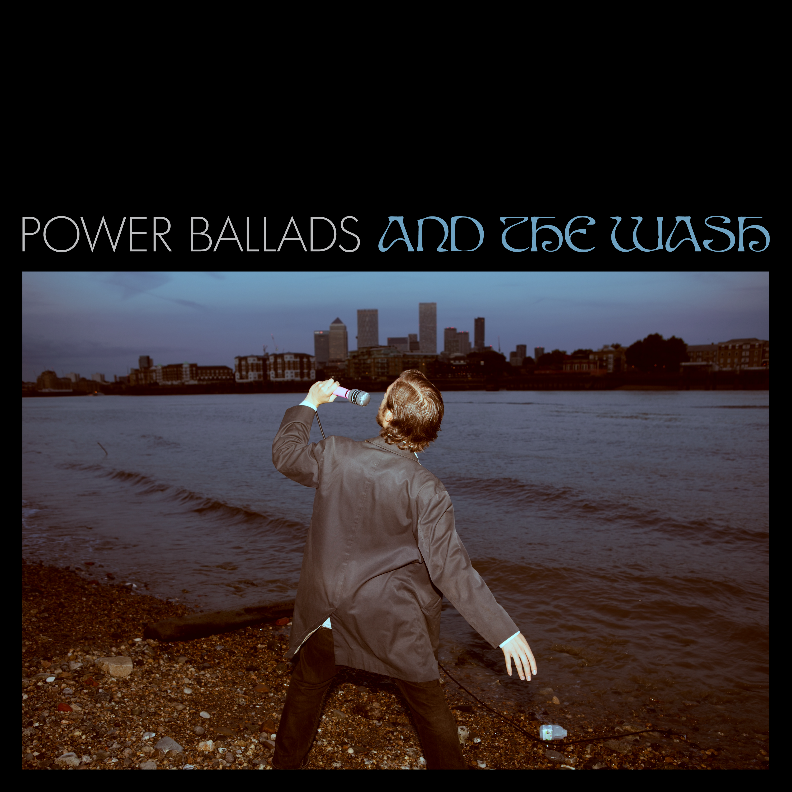

James Howard — Power Ballads and The Wash

FAI039 • contemporary / Singer Songwriter
Album Release: 19th November 2026 (Digital) / 6th November 2026 (Vinyl)
Tracklist
- Seven Seconds
- Power Ballads
- Low Winter Sun
- The Ancient Wisdom
- The Moon In The Movies
- Mm Mm Mm
- Thames Clipper
- Version Song
Power Ballads and The Wash is the sophomore album from London-based multi-instrumentalist James Howard, due for release on 6th November 2026 via boutique label Faith & Industry. James is known as founder of critically acclaimed 2010’s band Blue House and collaborator with luminaries such as Rozi Plain, Dana Gavanski, Kate Bollinger and Alabaster Deplume. For Power Ballads and The Wash James has worked with producer Mike Lindsay, co-founder of folktronica group Tunng. Power Ballads and The Wash follows James's debut solo album Peek-A-Boo, released to great acclaim in April 2023.
All eight songs of Power Ballads and The Wash began life as intimate live takes of guitar or piano and voice, recorded at Howard’s studio in Deptford, south London. Steeped in the energy of the local environment each session was preceded by a visit to the Thames to ask for its muddy blessing, with the DLR rumbling by. The sessions at Lindsay’s Margate studio built a widescreen world around Howard’s original performances.
Beneath this gentle absurdity lies something quietly powerful. Howard’s song-writing explores the notion that, despite our ever-shortening attention spans, there is still the possibility of quiet reflection and the discovery of revelations hidden in plain sight.